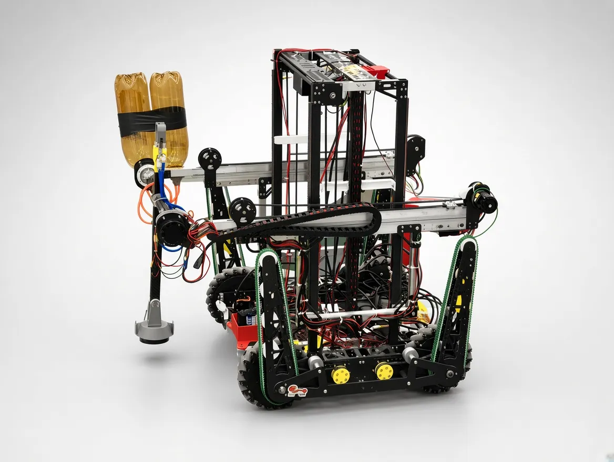

· 02 / 工程与机器人Engineering & Robotics
ROBOCON Competition Robot
华东理工大学 ROBOCON2026 的参赛机器人。一台在尺寸和重量都被限死的前提下，还要在赛场上把动作做准的机器。 ECUST's ROBOCON2026 entry: a machine that has to be precise in a competition, under a size and weight limit that leaves no room to be approximate.

背景Background
ROBOCON 的题目往往要求机器在很小的场地里完成大范围的动作：既要移动灵活，又要在远端把操作做到位。这两个诉求在机械上常常互相打架——底盘越灵活，结构越占地方；执行机构越靠前，整机的重心越难压住。
ROBOCON tasks usually ask a robot to do large motions in a small arena: it has to be agile in translation and still precise at the far end of its reach. Mechanically those two pull against each other — the more agile the chassis, the more room the structure takes; the further the effector reaches out, the harder it is to keep the centre of mass where you want it.
目标Goal
在竞赛限定的尺寸与重量内，做出一台既能灵活移动、又能把末端动作做准的机器人，并且让它在赛场上稳定地跑完，而不是偶尔成功一次。
Within the competition's size and weight limits, build a robot that is both agile in translation and accurate at the effector — and that does so reliably in a match, rather than occasionally.
我的贡献My contribution
我参与了整机机构与驱动方案的设计与出图，负责的主要部分是三块：
- 底盘：麦轮方案，让机器人能在小场地里做全向移动与快速换向。
- 传动：同步带传动，用在需要把电机放到结构内部、又要把扭矩送到远处的场合。
- 执行机构：气动方案，用于需要快速、大行程动作的末端环节。
I worked on the machine's mechanism and drive design, and on the drawings for it. Three parts were mostly mine:
- Chassis: the mecanum-wheel solution, giving omnidirectional movement and fast direction changes in a small arena.
- Transmission: timing belts, used where a motor has to sit inside the structure and its torque still has to arrive somewhere else.
- Actuation: the pneumatic solution for the end-effector stage, where the motion needs to be fast and long.
技术实现Implementation
从成品可以看到整机是分层搭起来的：底部是带轮系的底盘，机身用铝型材搭出竖直框架，框架中间横向装了一组直线导轨与同步带，把动力从结构内部送到前端的执行位置；左侧是黄色的木质拨片与气动缸，顶端是末端执行机构与整机的线束。
结构用铝型材而不是整体 CNC，好处是可以在比赛前反复改尺寸；代价是刚度和重复装配精度都要靠设计去保证。
The finished machine reads as layers: a wheeled chassis at the bottom, a vertical frame in aluminium extrusion, a horizontal linear rail with a timing belt across the middle carrying drive from inside the structure out to the working end, the yellow wooden paddle and its pneumatic cylinder on the left, and the end effector with the wiring loom at the top.
Aluminium extrusion rather than a fully machined body means the dimensions could still be changed before the competition — at the cost of stiffness and repeatability, which then have to be bought back in the design.
成果Outcome
这一台目前是竞赛项目，公开材料有限——没有开放仓库，也没有可公开的完整赛事记录。所以这一页只写我能有把握的部分：整机做出来了，机构方案定下来了。比赛结果我不在这里下结论，因为公开渠道拿不到可靠的逐场数据。
This one is a competition entry with limited public material — no open repository, and no match-by-match record I can point to. So this page covers only what I can stand behind: the machine was built and the mechanism was settled. I am not going to state a competition result here, because there is no reliable public data for it.
反思Reflection
竞赛机器人教会我的一件事是：机构设计的成败往往不在最精妙的那一处，而在所有零件都能在比赛前一晚被换掉。比赛前的时间永远比想象中少，所以每一个"只有我能装的"零件都是风险。
如果还有下一次，我会在设计阶段就把"可维护性"当成一条硬指标：哪些零件会被磨、会被撞、需要现场更换，它们就该能被最快地拆下来。
Competition robots teach one thing above others: the mechanism succeeds or fails not at the cleverest joint, but at whether every part can still be swapped the night before the match. There is never as much time before a competition as you imagine, so every "only I can assemble this" fitting is a risk.
If there is a next one, I would treat serviceability as a hard constraint from the first sketch: the parts that will wear, get hit and need replacing on the day should be the ones that come off fastest.